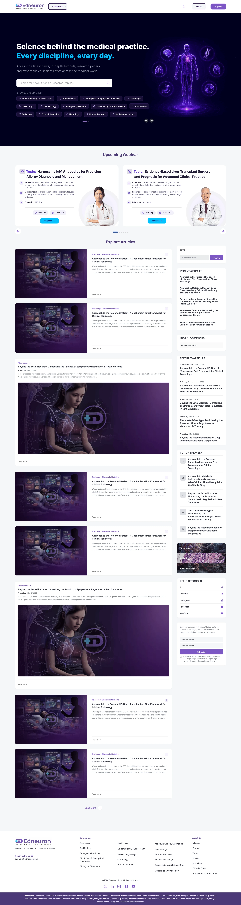
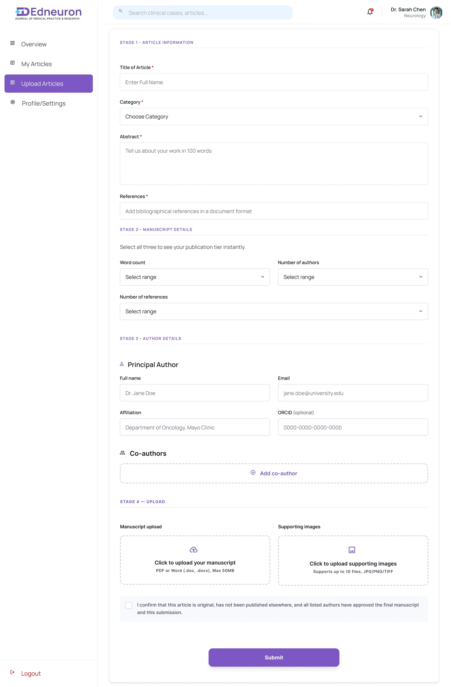

The Challenge
Medical learning was spread across too many places
Medical professionals and learners often rely on multiple platforms for clinical knowledge, research, learning, and professional development. This created fragmented journeys across different types of medical content.
EdNeuron needed a more structured experience that could bring these needs together while keeping discovery, reading, saving, publishing, and CME tracking simple.
Understanding the Users
Four users, four different goals
EdNeuron serves users with very different goals — from students looking for quick clinical references to researchers and doctors looking to publish, learn, and maintain their professional development. I mapped these needs to see where their journeys overlapped and where they needed specialized experiences.
Dr. Vikram Sarabhai
Senior Clinical ResearcherPrimary goal
Publish credible clinical research and establish authority through a verified medical platform.
Key needs
- Verified publishing environment
- Author verification
- Advanced research discovery
- Citation & reader analytics
- Efficient peer-review & publishing flow
Key frustration
Long and unclear peer-review processes and limited research-specific search/filtering.
Rohan Gupta
MBBS StudentPrimary goal
Quickly discover trustworthy medical references, save useful articles, and support exam/assignment preparation.
Key needs
- Fast specialty-based search
- Easy bookmarking
- Accessible clinical references
- Short, scannable content
- Personalized / saved learning resources
Key frustration
Difficulty finding specific medical content across fragmented resources and cluttered interfaces.
Dr. Rajesh Verma
Senior ConsultantPrimary goal
Access concise, evidence-based clinical content and earn CME credits within a busy schedule.
Key needs
- Quick specialty filtering
- Short clinical case studies
- Read-time indicators
- Medical webinars
- CME tracking
Key frustration
Long-form content, difficult discovery, and inefficient webinar/learning registration experiences.
Dr. Ananya Sharma
Doctor / Research AuthorPrimary goal
Publish clinical work through a credible platform while understanding the submission, pricing, review, and publishing process.
Key needs
- Simple author onboarding
- Clear publishing requirements
- Transparent pricing
- Article submission tracking
- CME & publishing recognition
Key frustration
Complex publishing processes, unclear pricing/requirements, and lack of visibility into review status.
User Journey Mapping
Mapping the user journeys
Because each user approached EdNeuron with a different goal, I mapped their end-to-end journeys to identify friction points, emotional states, touchpoints, and opportunities for improvement.
← Swipe to see the whole map, or tap to open full size
Researcher journey — from discovering literature and verifying author credentials to publishing research and tracking its impact.
- Better research discovery & filtering
- Dataset / citation access
- Author verification
- Transparent publishing tiers
- Peer-review status tracking
- Research analytics
← Swipe to see the whole map, or tap to open full size
Student journey — from discovering specialty-specific content to reading, saving, commenting, and returning to useful resources.
- Fast search & discovery
- Read-time indicators
- Bookmarking
- Saved articles
- Comments
- Personalized newsletter / retention
← Swipe to see the whole map, or tap to open full size
Clinician journey — from quickly discovering relevant clinical cases and webinars to publishing and earning CME credits.
- Specialty filtering
- Quick-read clinical content
- Webinar discovery
- Become-an-author flow
- Article submission
- CME credit tracking
← Swipe to see the whole map, or tap to open full size
Author journey — from account creation and author approval to article submission, pricing, review, and dashboard tracking.
- Simple onboarding
- Author verification
- Article submission
- Transparent pricing
- Review status
- Dashboard tracking
Key Insights
What the journeys revealed
Discovery needed to be faster
Users needed better specialty-based search and filtering instead of navigating through large amounts of content.
Different users, different entry points
The architecture needed to support multiple journeys without becoming confusing.
Trust was essential
Medical content, author credentials, research quality, and publishing status needed to be communicated clearly.
Progress needed visibility
Users needed clearer feedback around saved content, article status, peer review, publishing, and CME credits.
Information Architecture
Four journeys, one structure
Everyone shares the same discovery and learning layer; signed-in users get a personal space to track progress; authors get an additional publishing path on top.
Discover & learn
- Clinical Case Studies
- Research Papers
- Webinars
- Personalized Content
Track progress
- Dashboard
- Saved Articles
- CME Credits
- Analytics
Publish
- Author / Publishing
- 01
Research
- 02
User Personas
- 03
Journey Mapping
- 04
Information Architecture
- 05
User Flows
- 06
Wireframes
- 07
UI Design
- 08
Final Product
Key Design Decisions
What shaped the experience
Clear content hierarchy
Large amounts of medical and academic information were structured into scannable sections.
Seen in: dashboard stat cards, staged upload formSpecialty-based discovery
Users can quickly narrow down content according to their medical interests.
Seen in: homepage search + "Browse specialties" chipsMultiple journeys, one ecosystem
The architecture supports students, clinicians, researchers, and authors without making the experience feel fragmented.
Seen in: one sidebar — Overview, My Articles, Upload ArticlesVisibility of progress
Saved content, publishing status, review, and CME progress are made easier to understand.
Seen in: CME progress bar with target, saved-articles countFinal Design
Selected screens
Scroll inside the windows to see full pages. Click any screen to enlarge.
Homepage & discovery
One search bar and specialty chips give every user — student or consultant — the same fast starting point, followed by webinars and articles to explore.
↓ Scroll inside the window

Article experience
Long-form clinical articles with clear headings, figures and a sidebar for related and trending reads.

Dashboard & saved content
What a signed-in user lands on: saved articles, CME credits, likes and views at a glance, followed by content recommended for them.
CME & publishing
Progress you can read in a second, and a staged form that keeps article submission manageable.

Upload Articles — article info, manuscript details, authors, upload
CME credits — the current count, a target and a progress bar, so clinicians see how close they are without opening another page.
Outcome
The final experience brings multiple medical learning and professional journeys into one structured ecosystem, making content discovery, learning, publishing, and progress tracking easier to navigate.
What I learned
This project helped me understand how different user goals can coexist within one product without forcing everyone through the same journey. The biggest design challenge was balancing a large amount of medical content with clarity, trust, and ease of navigation.
Mapping personas and journeys helped me move from designing individual screens to thinking about the complete product experience.